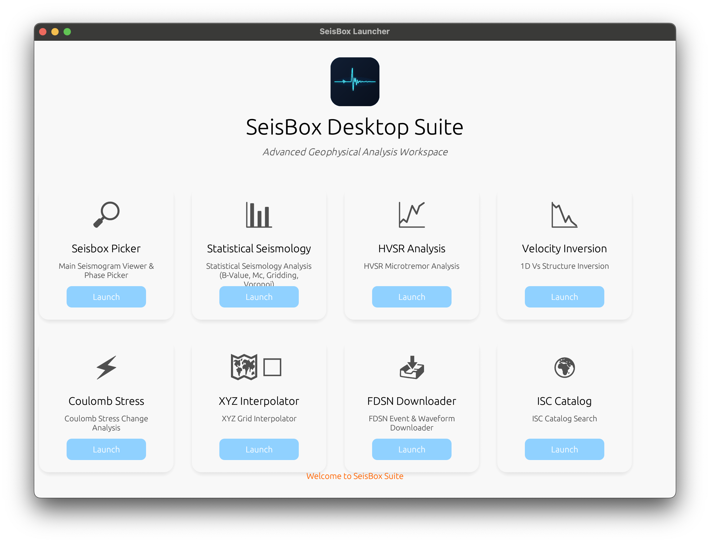

The **SeisBox Launcher Hub** is the central dashboard and entry point for the entire SeisBox suite. It provides a unified, elegant interface to easily discover and launch any of the 8 specialized geophysical modules without using the command line.
When you start SeisBox, you are greeted with the Main Dashboard. From here, you can see all available applications at a glance. Each card represents a unique tool tailored for a specific seismological workflow.

To start an application, simply click the Launch button on the corresponding card. If an application is already running, the button will intelligently indicate its status to prevent accidental duplicate sessions.